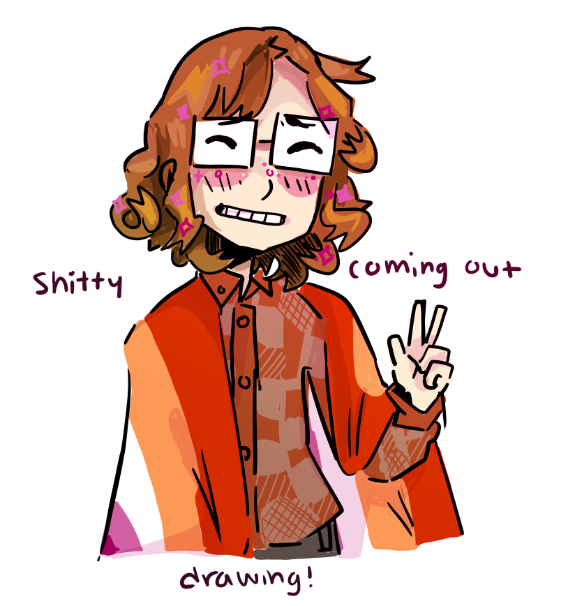

10_15_2020 - the closet
"
I CAME OUT!!!!
YOU HEARD ME!
I CAME OUT!!!
I even made a terrible drawing to express my enthusiasm.
It's been a whirlwind of emotions. If I could change anything, it would be that I didn't get to do it on my own time. I'm in the middle of college applications, and I forgot to check the "LGBTQ+ identification" question as 'no' before my parents could see. My mom saw and put me on the spot.
I cried. I cried a lot. My mom... it's complicated with her. She tries to be a good ally but she's really not a very good one at all. She's still trying to navigate all of these 'new' things and still tiptoes around gay and trans issues, but she's trying. And I'm greatful for that.
My dad. Man, my dad. I'm tearing up again just thinking about it, he couldn't have handled it better. He hugged me and told me he was proud of me -- he told me I didn't have to worry or make it a thing anymore. He told me that one of his closest coworkers, when he came out, always said he could go back in time to when he was 17 and just tell him to be himself. I got the best hug ever.
My brother and sister knew already. Later, my sister walked in the kitchen, and when she sensed the mood was off, she stopped. I was like, "mom and dad know I'm gay now" and she started jumping around the room with a fake cheer routine. "L-G-B-T!"
It's going to take me a long time to get all of this to sink in. I'm still scared, but I don't feel self-hatred anymore. I slept like a rock last night, and I just feel calm now.
Sorry this wasn't up to my usual prose.